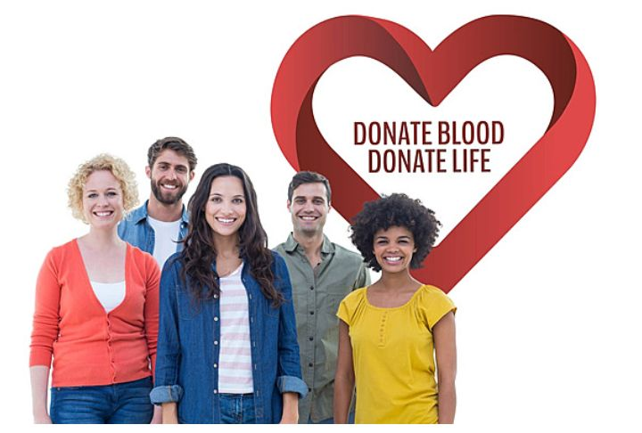
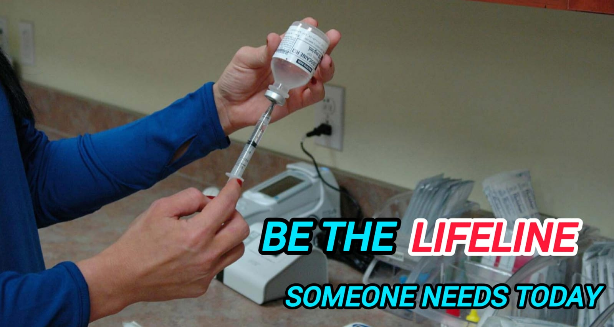
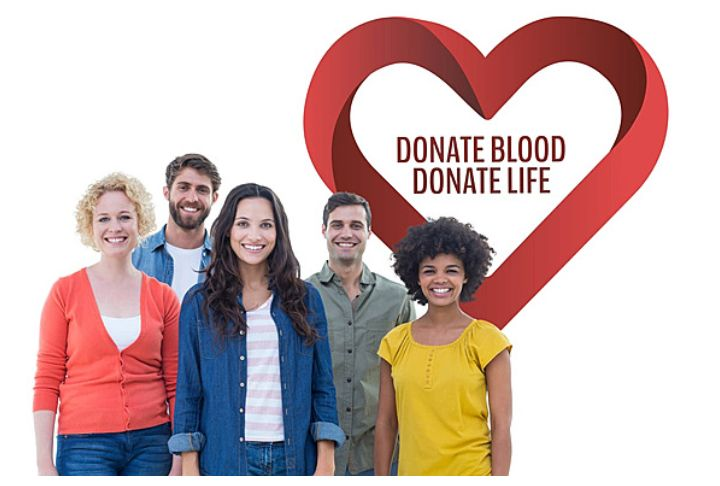
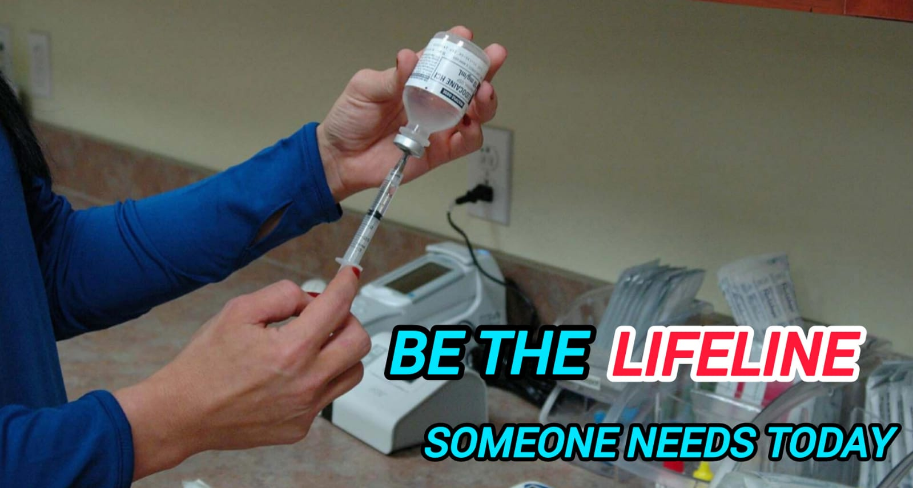

Necessity for Blood
India requires about 12 million units of blood annually, but often faces shortages.
Myths and lack of awareness hinder blood donation.
Rural areas face difficulties in accessing blood and lack proper infrastructure.
We, Donor Connect aim to boost donations and improve access.
Vital role of Blood Donation
Blood is essential for life,serving as the essential force that sustains and supports the body's overall functioning.
In medical settings, blood is crucial for treatments and surgeries, often making the difference between life and death.
Blood donation is vital because it saves lives by providing the blood needed for surgeries, trauma care, and treating various medical conditions.
Since blood cannot be manufactured, donations are the only way to meet these needs.
Our guiding Principles
We strives to inspire and facilitate a generous and active community of donors, making it easier to save lives and support those in need.
Encourage individuals to contribute to the well-being of society through regular donations.
Provide user-friendly tools and information to simplify the donation process.
Build a supportive network that highlights the impact of each donation and motivates ongoing participation.
Health Tips For Donors
Drink plenty of water before and after donating to help maintain blood volume and prevent dehydration.
Have a balanced meal rich in iron and vitamins to ensure your blood levels are adequate
Take a good rest to help your body recover quickly.
Refrain from strenuous activities for a few hours after donating to allow your body to adjust.
Follow the guidelines provided by the blood donation center, such as resting and avoiding alcohol, to aid recovery